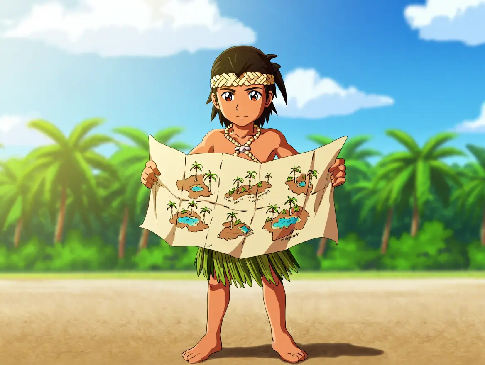
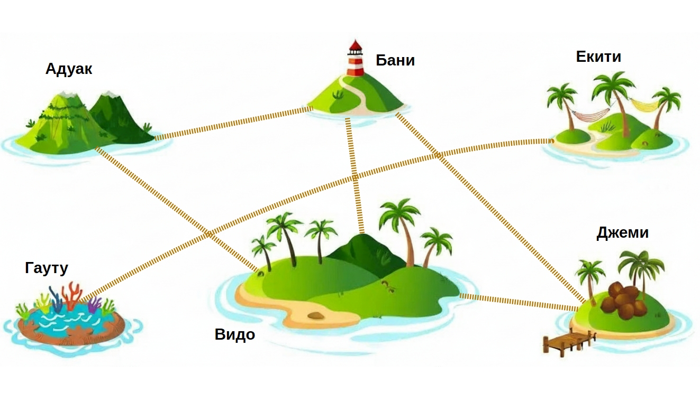

Содержание:
|
Превращаем карту в граф ПРИМЕР. В архипелаге шесть островов и шесть мостов: мост между островами Адуак и Бани, мост между островами Адуак и Видо, между островами Бани и Видо, между островами Екити и Гауту, между Бани и Джеми и между Видо и Джеми. Можно ли по мостам перейти с острова Адуака на остров Гауту?  Построим графГрафИзображение объектов и связей между ними с помощью точек и линий.. Острова изобразим вершинами, а мосты - рёбрами. Если нарисовать граф подходящим образом, то ответ очевиден: нельзя.
|